Строка меню macOS · Exchange / OWA, Google, iCloud
macOS menu bar · Exchange / OWA, Google, iCloud
Встреча через
12 минут.
Ссылка уже здесь.
Meeting in
12 minutes.
The link is already here.
Все встречи из Exchange, Google и iCloud на одном таймлайне — и звонок в Teams, Zoom или Webex одним нажатием.
All your Exchange, Google and iCloud meetings on one timeline — and your Teams, Zoom or Webex call one click away.
v1.0 · macOS 13+ · Apple Silicon & Intel · бесплатноfree
При первом запуске нужна одна команда в Терминале — как установитьThe first launch needs one Terminal command — how to install
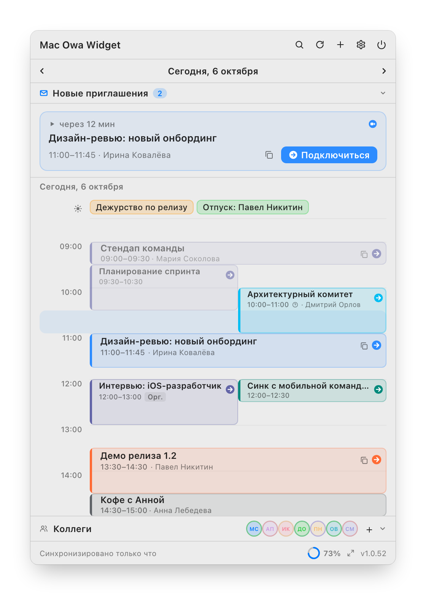

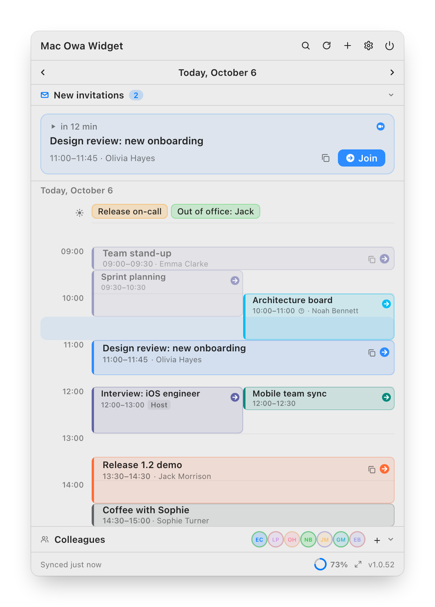

Звонок через две минуты. Ссылку не нужно искать в письме.
The call is in two minutes. No digging for the link.
Приложение само находит ссылку на Teams, Zoom, Webex, Google Meet или KTalk — в поле онлайн-встречи, в месте или в описании. Остаётся нажать.
The app finds the Teams, Zoom, Webex, Google Meet or KTalk link on its own — in the online meeting field, the location or the description. All that's left is to click.
- Умный статус в строке меню: сколько до встречи и сколько до её конца
- Напоминание с кнопкой на том мониторе, где сейчас курсор
- Ctrl+Option+J — подключиться из любого приложения
- Встречу перенесли или отменили — панель сообщит и даст ответить сразу
- Smart menu bar status: time until the meeting, and until it ends
- A reminder with a Join button on the display where your cursor is
- Ctrl+Option+J joins from any app
- Moved or cancelled meetings show up in a panel you can answer from
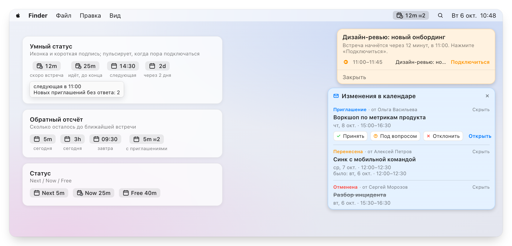

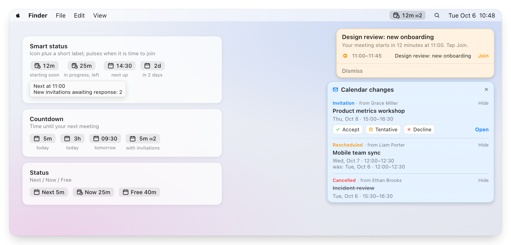

Повестка целиком, а не первые 255 символов.
The whole agenda, not the first 255 characters.
Карточка встречи показывает описание так, как его написали: таблица тайминга остаётся таблицей, списки — списками, ссылки кликабельны. Там же — участники и ответ на приглашение.
The meeting card shows the description the way it was written: a timetable stays a table, lists stay lists, links are clickable. Participants and your RSVP live there too.
- Принять, под вопросом, отклонить — не открывая Outlook
- Длинный список участников сворачивается
- Копирование названия, ссылки или всего сразу
- Accept, tentative, decline — without opening Outlook
- Long participant lists collapse
- Copy the title, the link, or everything at once
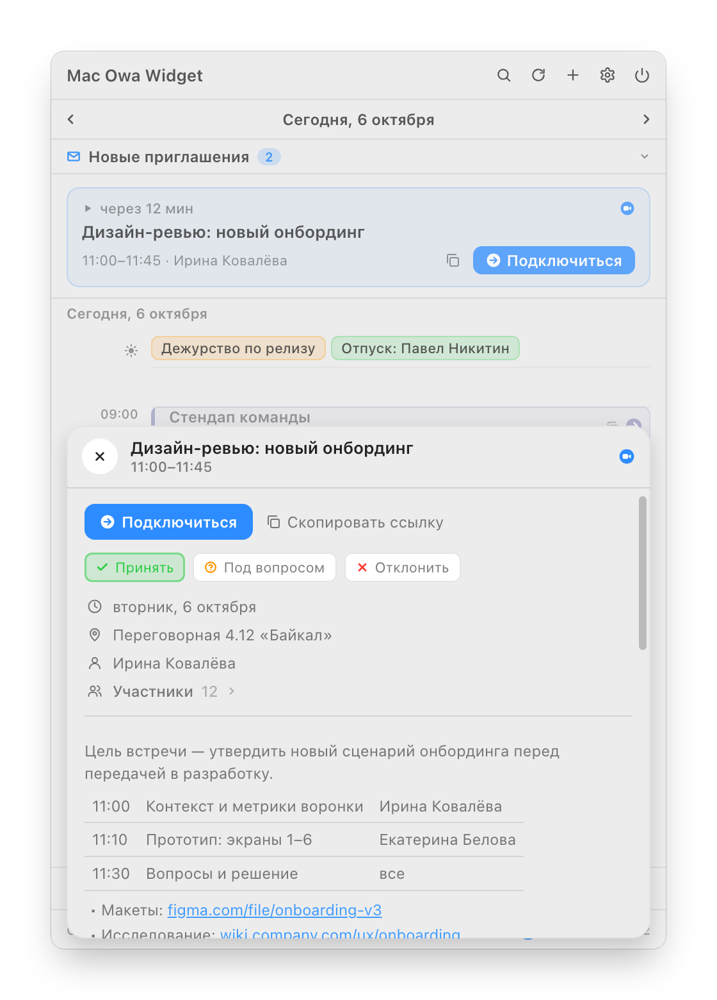

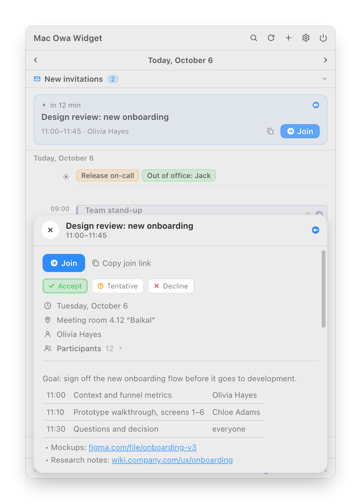

Найти час, когда свободны все пятеро.
Find the hour when all five are free.
Добавьте участников из адресной книги Exchange — сетка покажет занятость каждого на неделю, а «Лучшие варианты» предложат удачный слот на каждый день. Выберите длительность, и останутся только окна, куда встреча помещается.
Add people from the Exchange address book and the grid shows everyone's week, while Best options suggests a good slot for each day. Pick a duration and only the windows the meeting fits into remain.
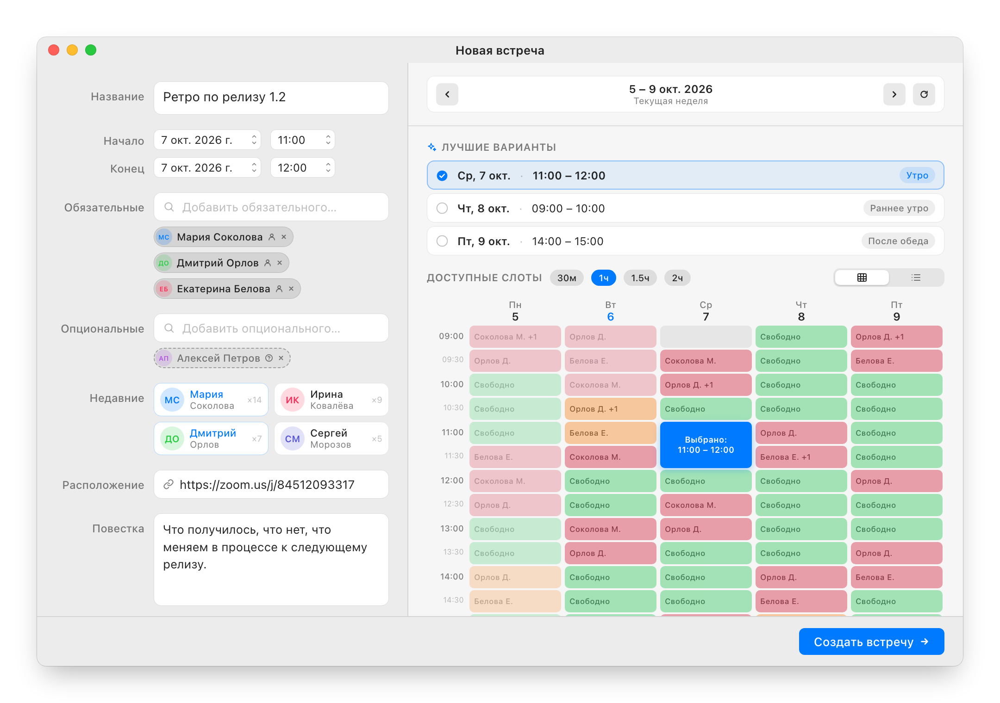

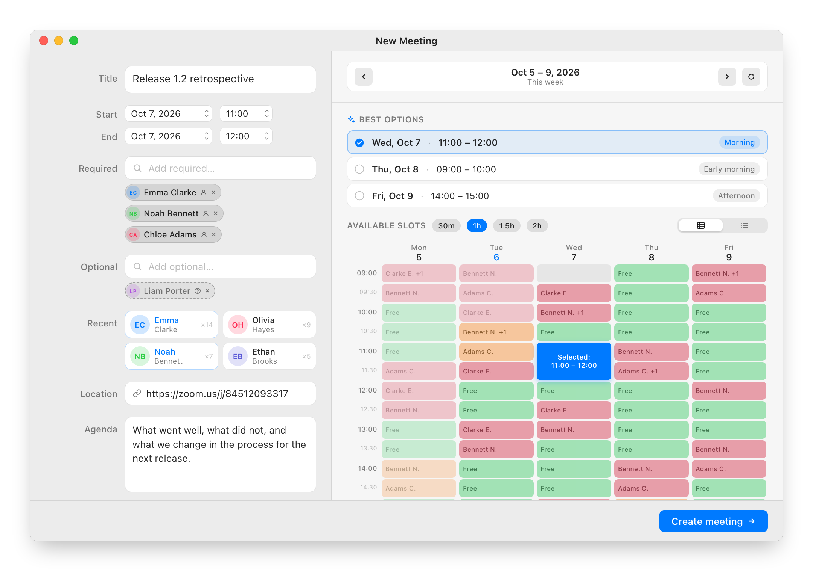

Где была та встреча про бюджет?
Where was that meeting about the budget?
Поиск по названию, организатору, участникам, месту и описанию — неделя назад и месяц вперёд. А внизу окна — коллеги, с которыми вы созваниваетесь чаще всего: видно, кто свободен, и можно сразу зайти в его комнату Teams или Zoom.
Search by title, organizer, participants, location and description, a week back and a month ahead. And at the bottom of the window, the colleagues you call most: see who is free and jump into their Teams or Zoom room.
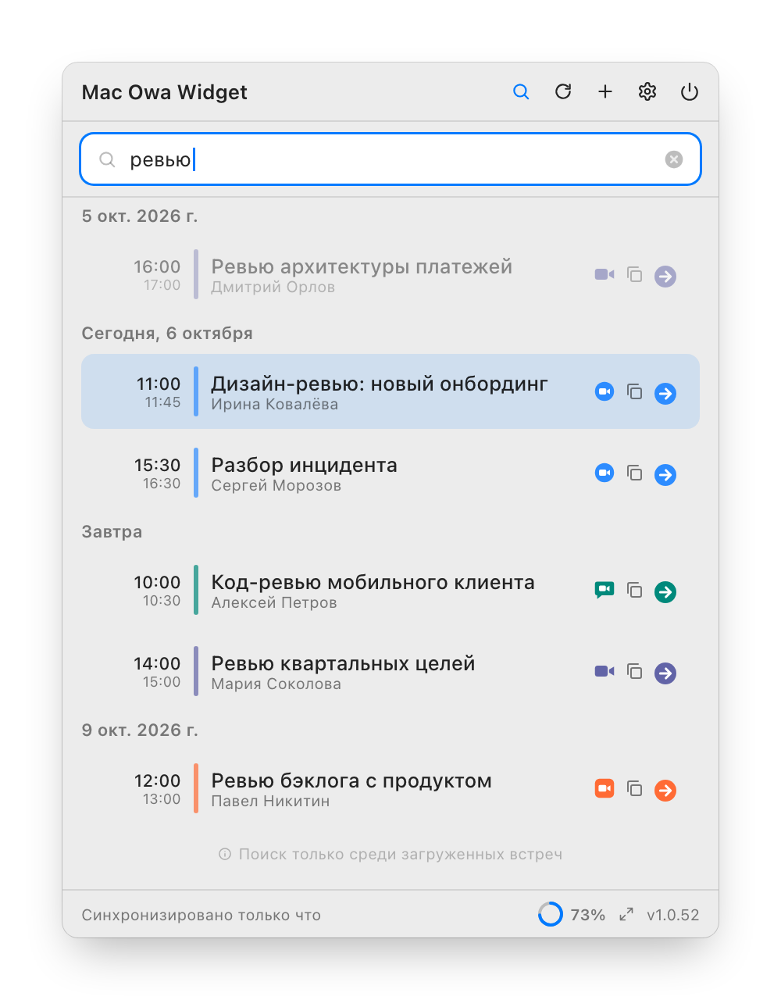

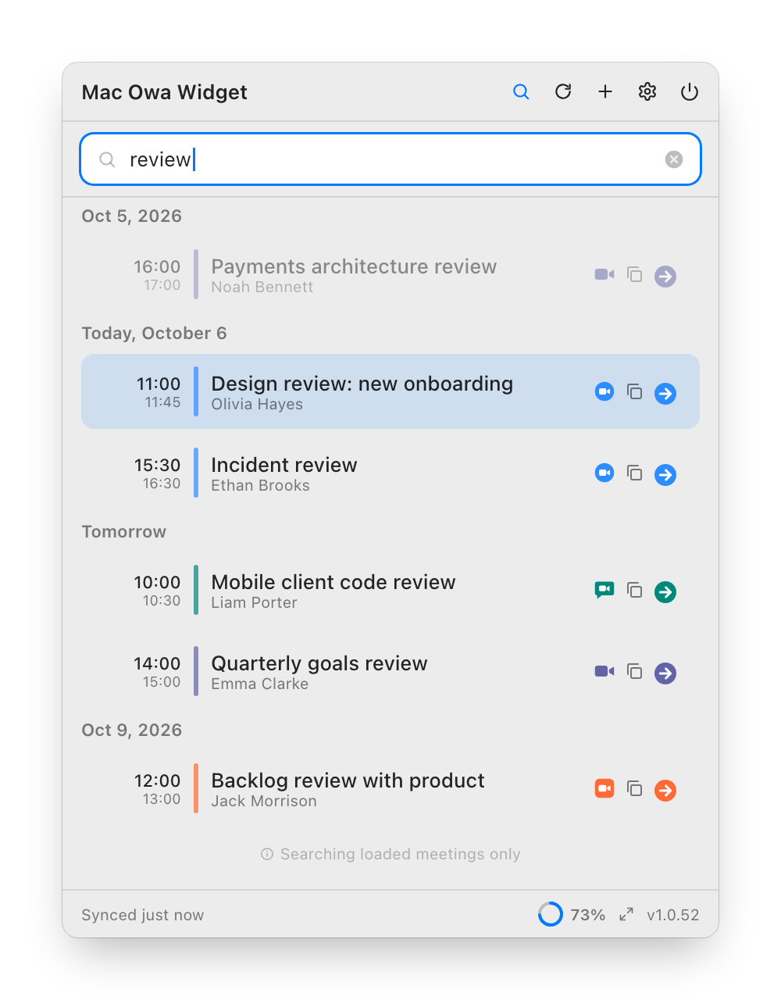

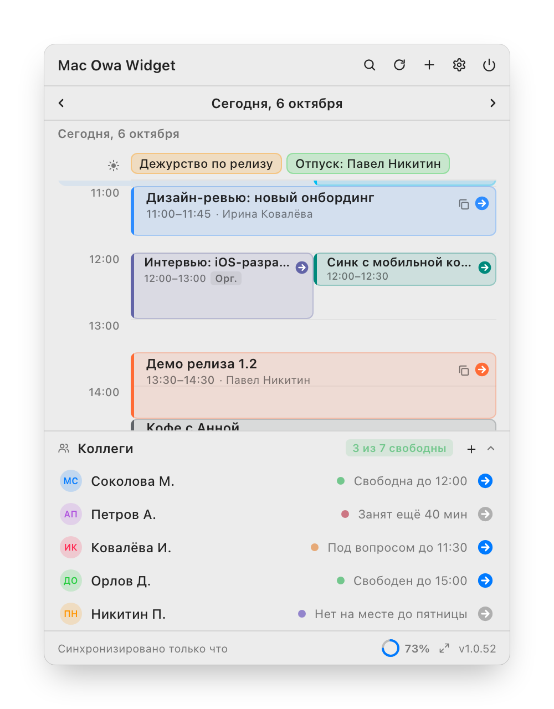

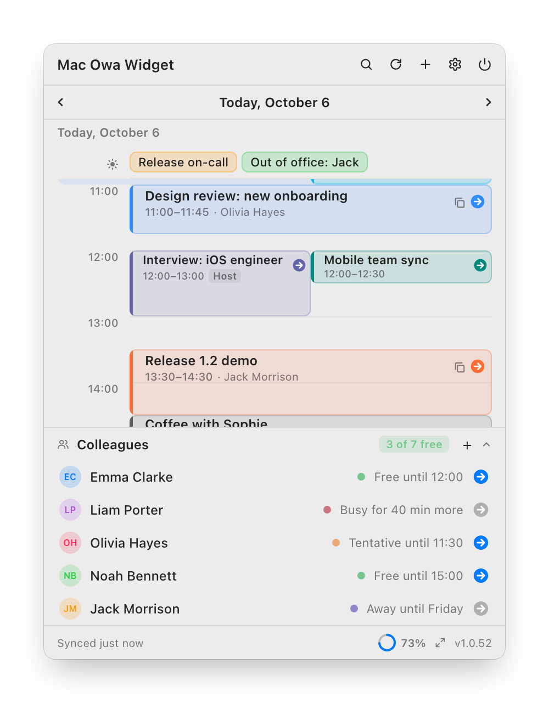

Рабочий Exchange, личный Google, семейный iCloud.
Work Exchange, personal Google, family iCloud.
Несколько серверов Exchange / OWA, включая переход на единый вход Windows, и любые календари, которые уже синхронизирует ваш Mac. Всё на одном таймлайне.
Several Exchange / OWA servers, including ones behind Windows single sign-on, and any calendar your Mac already syncs. All on one timeline.
- Календари macOS — только для чтения; отвечать и создавать встречи можно в OWA
- Тема, размер окна, часовой пояс и язык — в настройках
- macOS calendars are read-only; RSVP and new meetings go through OWA
- Theme, window size, time zone and language in Settings
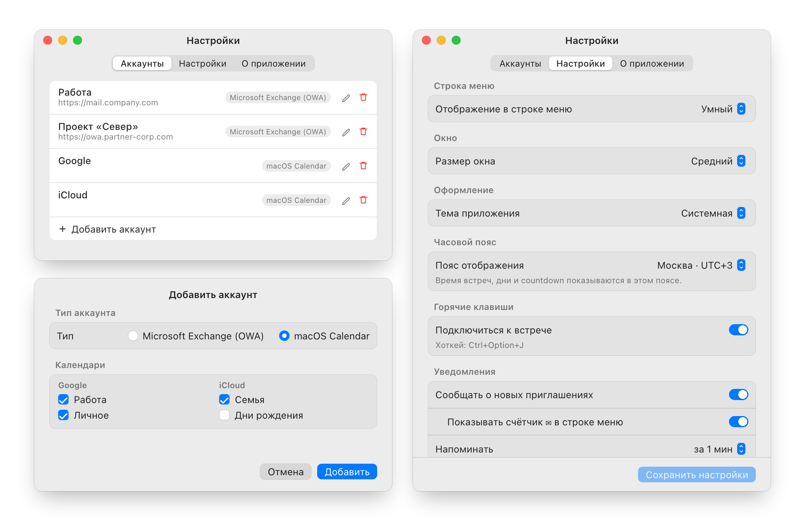

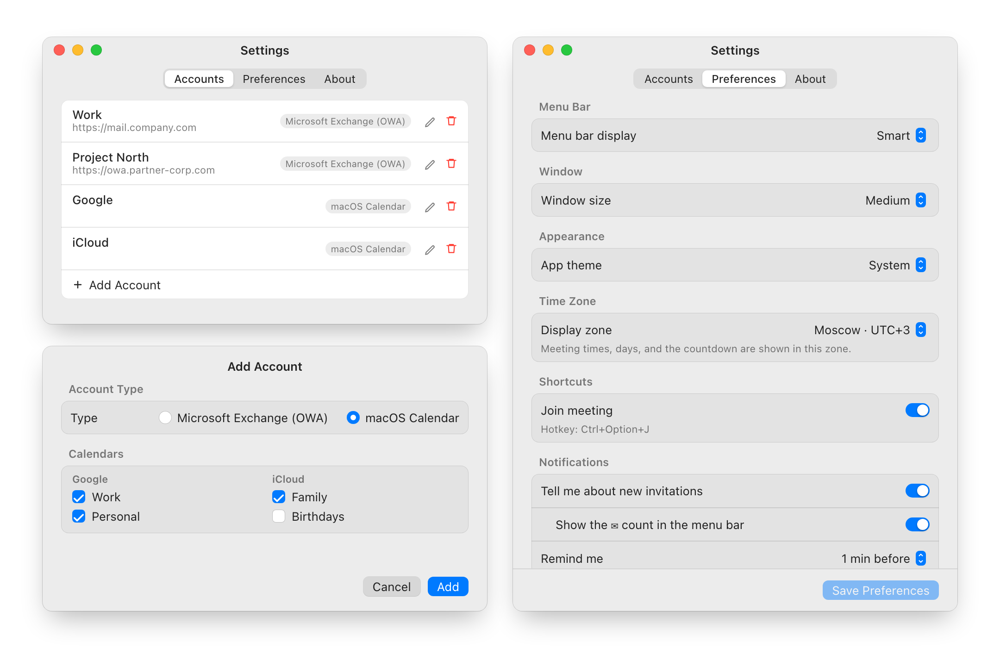

Ваш календарь остаётся вашим.
Your calendar stays yours.
А аккаунты, кэш встреч и история участников зашифрованы на диске.
Accounts, the meeting cache and attendee history are encrypted on disk.
Учётные данные уходят туда, куда вы указали. Редирект на другой адрес — только с вашего подтверждения.
Credentials go where you pointed them. A redirect elsewhere needs your confirmation.
Сменившийся сертификат покажет старый и новый отпечаток, чтобы замену можно было отличить от подмены.
A changed certificate shows the old and new fingerprints, so a renewal can be told from an intercept.
Диагностический лог лежит у вас на Mac и не содержит названий встреч, адресов и паролей.
The diagnostic log stays on your Mac and holds no meeting titles, addresses or passwords.
Две минуты, один раз.
Two minutes, once.
- Скачайте архивDownload the archive
Последний релиз на GitHub, файл
.zipдля macOS.The latest release on GitHub, the macOS
.zip. - Перенесите в «Программы»Move it to Applications
Распакуйте и перетащите
OWAWidget.appв/Applications.Unzip and drag
OWAWidget.appto/Applications. - Снимите карантинRemove the quarantine flag
У приложения нет подписи Apple Developer ID, поэтому при первом запуске macOS может его заблокировать.
The app has no Apple Developer ID signature, so macOS may block the first launch.
xattr -dr com.apple.quarantine /Applications/OWAWidget.app - Запустите и добавьте аккаунтLaunch and add an account
Иконка появится в строке меню. «Настройки» → «Аккаунты» → «+»: Exchange (OWA) или macOS Calendar.
The icon appears in the menu bar. Settings → Accounts → “+”: Exchange (OWA) or macOS Calendar.
open /Applications/OWAWidget.app
- macOS
- 13 Ventura и новее, Apple Silicon и Intel
- 13 Ventura or later, Apple Silicon and Intel
- Календарь
- Calendar
- Exchange 2016, 2019, Online — и/или Google, iCloud через macOS
- Exchange 2016, 2019, Online — and/or Google, iCloud via macOS
- Сеть
- Network
- Доступ к Exchange или VPN; календарям Mac не нужен
- Access to Exchange or a VPN; not needed for Mac calendars
Карантин снимается только при первой установке. Дальше обновления ставит Sparkle — кнопкой «Установить» прямо в окне приложения.
The quarantine step is for the first install only. After that Sparkle installs updates with the Install button right in the app window.
Частые вопросы
Questions
Где взять адрес OWA-сервера?Where do I find my OWA server address?
Это адрес, по которому вы открываете корпоративную почту в браузере, например mail.company.com. Если компания перешла на единый вход Windows, учётная запись указывается как ДОМЕН\логин с паролем от компьютера.
It's the address you open corporate webmail with, e.g. mail.company.com. If your company uses Windows single sign-on, enter the account as DOMAIN\login with your PC password.
Можно ли пользоваться без Exchange?Can I use it without Exchange?
Да. Добавьте аккаунт «macOS Calendar» — виджет покажет календари, которые синхронизирует Mac: Google, iCloud, локальные. Они только для чтения: ответы на приглашения, создание встреч и «Коллеги» работают с Exchange / OWA.
Yes. Add a “macOS Calendar” account and the widget shows the calendars your Mac syncs: Google, iCloud, local. They are read-only: RSVP, new meetings and Colleagues need Exchange / OWA.
Зачем macOS спрашивает доступ к Календарю?Why does macOS ask for Calendar access?
Только чтобы читать календари Google, iCloud и локальные. Если у вас только Exchange / OWA, разрешение можно не давать.
Only to read Google, iCloud and local calendars. If you use Exchange / OWA alone, you can decline it.
Нужен ли VPN?Do I need a VPN?
Если Exchange доступен только из корпоративной сети — да: приложение должно видеть тот же сервер, что и браузер. Календарям Google и iCloud VPN не нужен.
If Exchange is only reachable from the corporate network, yes: the app needs the same server your browser sees. Google and iCloud calendars don't need it.
Почему у встречи нет кнопки подключения?Why is there no Join button?
Кнопка появляется, когда в поле онлайн-встречи, месте или описании есть ссылка на звонок. Проверьте, что организатор её добавил.
The button appears when the online meeting field, location or description contains a call link. Check that the organizer added one.
Что-то не работает — что прислать?Something is broken — what should I send?
Правый клик по иконке в строке меню → «Скопировать диагностику», и приложите текст к issue на GitHub. В логе нет названий встреч, адресов и паролей.
Right-click the menu bar icon → “Copy diagnostics” and attach it to a GitHub issue. The log contains no meeting titles, addresses or passwords.